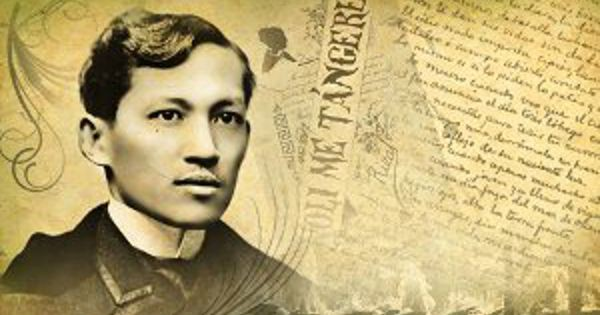
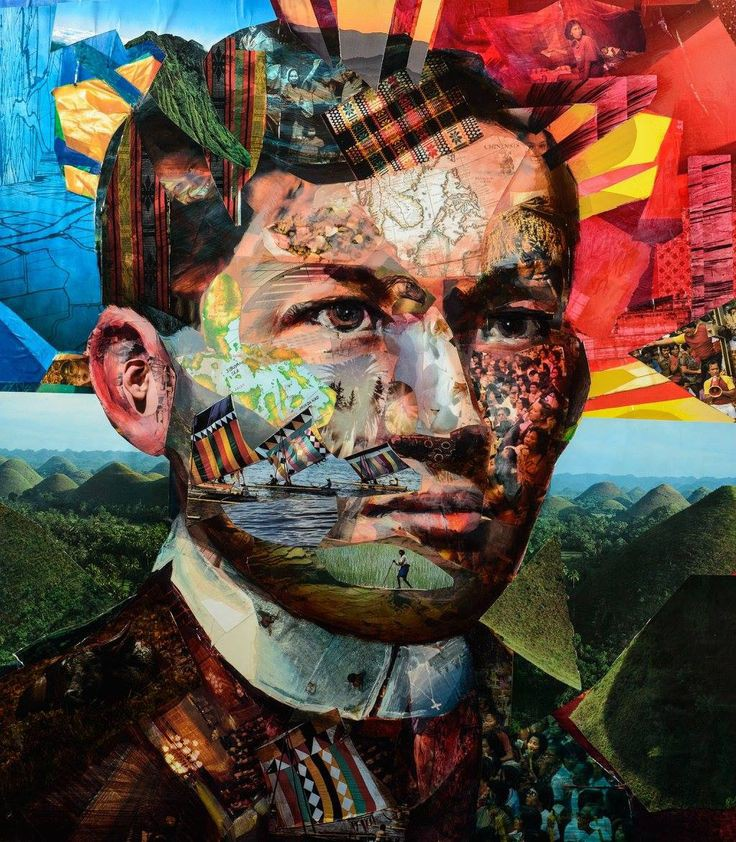

Complete Works of Rizal
Jose Rizal was a polymath who excelled in different fields. The following is a list of known works (novels, essays, poems, plays, sculptures, and paintings) by Rizal.

Novels and Essays
- Noli Me Tángere, novel, 1887
- El Filibusterismo, (novel, 1891), sequel to Noli Me Tángere
- Alin Mang Lahi (“Whate’er the Race”), a Kundiman attributed to Dr. Jose Rizal
- The Friars and the Filipinos (Unfinished)
- Toast to Juan Luna and Felix Hidalgo (Speech, 1884), given at Restaurante Ingles, Madrid
- The Diaries of José Rizal
- Rizal’s Letters is a compendium of Dr. Jose Rizal’s letters to his family members, Blumentritt, Fr. Pablo Pastells and other reformers
“Come se gobiernan las Filipinas” (Governing the Philippine islands)
- Filipinas dentro de cien años essay, 1889–90 (The Philippines a Century Hence)
- La Indolencia de los Filipinos, essay, 1890 (The indolence of Filipinos)[51]
- Makamisa unfinished novel
- Sa Mga Kababaihang Taga Malolos, essay, 1889, To the Young Women of Malolos
- Annotations to Antonio de Moragas, Sucesos de las Islas Filipinas (essay, 1889, Events in the Philippine Islands)
Poetry
- A La Juventud Filipina (English translation: To The Philippine Youth)
- El Canto Del Viajero (English translation: Song of the Wanderer)
- Briayle Crismarl
- Canto de María Clara (English translation: Song of Maria Clara)
- Himno Al Trabajo (Dalit sa Paggawa)
- Felicitación [Felicitation (English Translation)]
- Kundiman (Tagalog) [Kundiman (English Translation)]
- Me Piden Versos (English translation: They Ask Me for Verses!)
- Mi Primera Inspiracion
- Mi Retiro (English translation: My Retreat)
- Mi Ultimo Adiós (English translation: My Last Farewell)
- Por La Educación (Recibe Lustre La Patria) (English translation: Education Gives Luster to Motherland
- Sa Sanggol na si Jesus (English translation: Child Jesus)
- A Mi Musa (English translation: To My Muse)
- Un Recuerdo A Mi Pueblo (English translation: Memories of My Town)
- A Man in Dapitan
Plays And Sculptures
- El Consejo de los Dioses (The Council of Gods)
- Junto Al Pasig (Along the Pasig)
- San Euistaquio, Mártyr (Saint Eustache, the Martyr)
- The Triumph of Science over Death (Sculpture)
Paintings
- Saturnina Rizal in oil now being displayed in Rizal Shrine in Fort Santiago
- Dapitan church curtains in oil made in Dapitan in 1984.
- An oil painting on a pair of mother-of-pearl shells painted in Dapitan and given as a token to Doña Leonor Valenzuela and later passed on to Doña Margarita Valenzuela
- Water color painting of the Spanish coat of arms done during San Rafael fiesta in Calamba in 1867
- Allegory on a pair of porcelain bases of the new year celebration in oil painted in Berlin in 1886
- Allegory on a pair of porcelain bases of the new year celebration in oil painted in Berlin in 1886
- Crayon painting of Immaculate Conception made in Manila, 1974
- Crayon painting of Portrait of Morayta made in Barcelona, 1885

Legacy of Jose Rizal
José Rizal is remembered today throughout the Philippines for his brilliance, courage, peaceful resistance to tyranny, and compassion. Filipino schoolchildren study his final literary work, a poem called "Mi Ultimo Adios" ("My Last Goodbye"), and his two famous novels. But what made Jose Rizal worthy of becoming the Philippines’ national hero was not merely his intelligence, personality, literary acumen, or his pacifist ideals. Rather, it was his patriotism, optimism, undying love for his country and his belief in his countrymen which set him apart. He believed not merely in freedom but in the potential of the Filipino people to surpass what they were under the Spanish colonial government, and all he wished was for them to be given the chance to tap into that potential. And for that, he has earned his right place as a symbol of what a Filipino can do in one short lifetime.